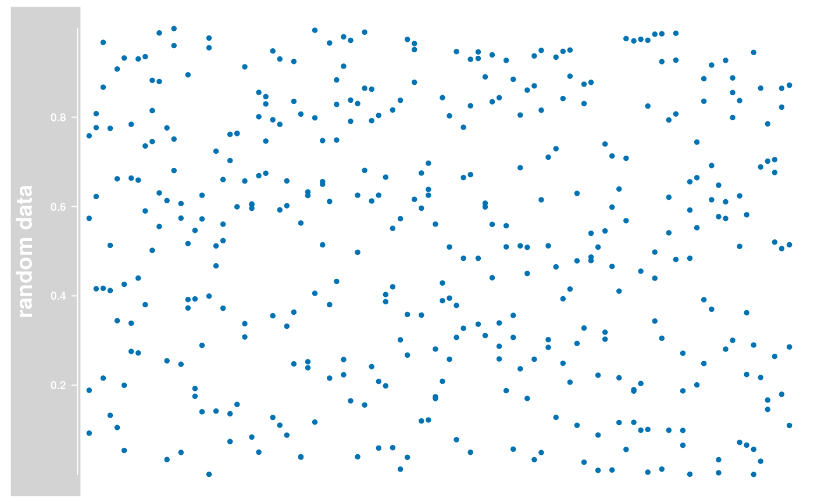
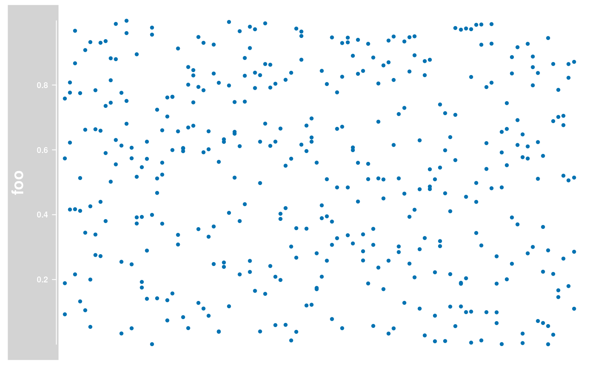

A class to store numeric data values along genomic coordinates. Multiple samples as well as sample groupings are supported, with the restriction of equal genomic coordinates for a single observation across samples.
# S4 method for DataTrack
initialize(.Object, data = matrix(), strand, ...)
# S4 method for ReferenceDataTrack
initialize(
.Object,
stream,
reference,
mapping = list(),
args = list(),
defaults = list(),
...
)
DataTrack(
range = NULL,
start = NULL,
end = NULL,
width = NULL,
data,
chromosome,
strand,
genome,
name = "DataTrack",
importFunction,
stream = FALSE,
...
)
# S4 method for DataTrack
values(x, all = FALSE)
# S4 method for DataTrack
values(x) <- value
# S4 method for DataTrack
strand(x)
# S4 method for DataTrack,ANY
strand(x) <- value
# S4 method for DataTrack,ANY
split(x, f, drop = FALSE, ...)
# S4 method for DataTrack
feature(GdObject)
# S4 method for DataTrack,character
feature(GdObject) <- value
# S4 method for DataTrack
collapseTrack(GdObject, diff = .pxResolution(coord = "x"), xrange)
# S4 method for DataTrack,ANY,ANY,ANY
[(x, i, j, ..., drop = FALSE)
# S4 method for DataTrack
subset(
x,
from = NULL,
to = NULL,
sort = FALSE,
drop = TRUE,
use.defaults = TRUE,
...
)
# S4 method for ReferenceDataTrack
subset(x, from, to, chromosome, ...)
# S4 method for DataTrack
drawAxis(GdObject, ...)
# S4 method for DataTrack
drawGD(GdObject, minBase, maxBase, prepare = FALSE, subset = TRUE, ...)
# S4 method for DataTrack
show(object)
# S4 method for ReferenceDataTrack
show(object).Object
A numeric matrix of data points with the number of columns equal
to the number of coordinates in range, or a numeric vector of
appropriate length that will be coerced into such a one-row matrix. Each
individual row is supposed to contain data for a given sample, where the
coordinates for each single observation are constant across samples.
Depending on the plotting type of the data (see 'Details' and 'Display
Parameters' sections), sample grouping or data aggregation may be available.
Alternatively, this can be a character vector of column names that point
into the element metadata of the range object for subsetting.
Naturally, this is only supported when the range argument is of class
GRanges.
Character vector, the strand information for the individual
track items. Currently this has to be unique for the whole track and doesn't
really have any visible consequences, but we might decide to make
DataTracks strand-specific at a later stage.
Additional items which will all be interpreted as further display parameters.
A logical flag indicating that the user-provided import
function can deal with indexed files and knows how to process the additional
selection argument when accessing the data on disk. This causes the
constructor to return a ReferenceDataTrack object which will grab the
necessary data on the fly during each plotting operation.
An optional meta argument to handle the different input types.
If the range argument is missing, all the relevant information to create
the object has to be provided as individual function arguments (see below).
The different input options for range are:
A GRanges object: essentially all the necessary information
to create a DataTrack can be contained in a single GRanges
object. The track's coordinates are taken from the start, end
and seqnames slots, the genome information from the genome slot, and
the numeric data values can be extracted from additional metadata columns
columns (please note that non-numeric columns are being ignored with a
warning). As a matter of fact, calling the constructor on a GRanges
object without further arguments, e.g. DataTrack(range=obj) is
equivalent to calling the coerce method as(obj, "DataTrack").
Alternatively, the GRanges object may only contain the coordinate
information, in which case the numeric data part is expected to be present
in the separate data argument, and the ranges have to match the
dimensions of the data matrix. If data is not NULL, this will
always take precedence over anything defined in the range argument.
See below for details.
An IRanges object: this is very similar to the
above case, except that the numeric data part now always has to be provided
in the separate data argument. Also the chromosome information must
be provided in the chromosome argument, because neither of the two
can be directly encoded in an IRange object.
A data.frame object: the data.frame needs to contain
at least the two mandatory columns start and end with the
range coordinates. It may also contain a chromosome column with the
chromosome information for each range. If missing it will be drawn from the
separate chromosome argument. All additional numeric columns will be
interpreted as data columns, unless the data argument is explicitely
provided.
A character scalar: in this case the value of the
range argument is considered to be a file path to an annotation file
on disk. A range of file types are supported by the Gviz package as
identified by the file extension. See the importFunction
documentation below for further details.
Integer vectors, giving the start and the end end coordinates for the individual track items, or their width. Two of the three need to be specified, and have to be of equal length or of length one, in which case the single value will be recycled accordingly. Otherwise, the usual R recycling rules for vectors do not apply and the function will cast an error.
The chromosome on which the track's genomic ranges are
defined. A valid UCSC chromosome identifier if
options(ucscChromosomeNames=TRUE). Please note that in this case only
syntactic checking takes place, i.e., the argument value needs to be an
integer, numeric character or a character of the form chrx, where
x may be any possible string. The user has to make sure that the
respective chromosome is indeed defined for the the track's genome. If not
provided here, the constructor will try to construct the chromosome
information based on the available inputs, and as a last resort will fall
back to the value chrNA. Please note that by definition all objects
in the Gviz package can only have a single active chromosome at a
time (although internally the information for more than one chromosome may
be present), and the user has to call the chromosome<- replacement
method in order to change to a different active chromosome.
The genome on which the track's ranges are defined. Usually
this is a valid UCSC genome identifier, however this is not being formally
checked at this point. If not provided here the constructor will try to
extract this information from the provided input, and eventually will fall
back to the default value of NA.
Character scalar of the track's name used in the title panel when plotting.
A user-defined function to be used to import the data
from a file. This only applies when the range argument is a character
string with the path to the input data file. The function needs to accept an
argument file containing the file path and has to return a proper
GRanges object with the data part attached as numeric metadata
columns. Essentially the process is equivalent to constructing a
DataTrack directly from a GRanges object in that non-numeric
columns will be dropped, and further subsetting can be archived by means of
the data argument. A set of default import functions is already
implemented in the package for a number of different file types, and one of
these defaults will be picked automatically based on the extension of the
input file name. If the extension can not be mapped to any of the existing
import function, an error is raised asking for a user-defined import
function. Currently the following file types can be imported with the
default functions: wig, bigWig/bw, bedGraph and
bam.
Some file types support indexing by genomic coordinates (e.g., bigWig
and bam), and it makes sense to only load the part of the file that
is needed for plotting. To this end, the Gviz package defines the
derived ReferenceDataTrack class, which supports streaming data from
the file system. The user typically does not have to deal with this
distinction but may rely on the constructor function to make the right
choice as long as the default import functions are used. However, once a
user-defined import function has been provided and if this function adds
support for indexed files, you will have to make the constructor aware of
this fact by setting the stream argument to TRUE. Please note
that in this case the import function needs to accept a second mandatory
argument selection which is a GRanges object containing the
dimensions of the plotted genomic range. As before, the function has to
return an appropriate GRanges object.
Value to be set.
Object of GdObject-class.
The return value of the constructor function is a new object of class
DataTrack or ReferenceDataTrack.
Depending on the setting of the type display parameter, the data can
be plotted in various different forms as well as combinations thereof.
Supported plotting types are:
p: simple xy-plot.
l: lines plot. In the case of multiple samples this plotting
type is not overly usefull since the points in the data matrix are connected
in column-wise order. Type a might be more appropriate in these
situations.
b: combination of xy-plot and lines plot.
a: lines plot of the column-wise average values.
s: sort and connect data points along the x-axis
S: sort and connect data points along the y-axis
g: add grid lines. To ensure a consitant look and feel across
multiple tracks, grid lines should preferentially be added by using the
grid display parameter.
r: add a regression line to the plot.
h: histogram-like vertical lines centered in the middle of
the coordinate ranges.
smooth: add a loess fit to the plot. The following display
parameters can be used to control the loess calculation: span, degree,
family, evaluation. See panel.loess for details.
histogram: plot data as a histogram, where the width of the
histogram bars reflects the width of the genomic ranges in the range
slot.
mountain: plot a smoothed version of the data relative to a
baseline, as defined by the baseline display parameter. The following
display parameters can be used to control the smoothing: span, degree,
family, evaluation. See panel.loess for details. The layout
of the plot can be further customized via the following display parameters:
col.mountain, lwd.mountain, lty.mountain, fill.mountain.
polygon: plot data as a polygon (similar to
mountain-type but without smoothing). Data are plotted relative to a
baseline, as defined by the baseline display parameter. The layout of
the plot can be further customized via the following display parameters:
col.mountain, lwd.mountain, lty.mountain, fill.mountain.
boxplot: plot the data as box-and-whisker plots. The layout
of the plot can be further customized via the following display parameters:
box.ratio, box.width, varwidt, notch, notch.frac, levels.fos, stats,
coef, do.out. See panel.bwplot for details.
gradient: collapse the data across samples and plot this
average value as a color-coded gradient. Essenitally this is similar to the
heatmap-type plot of a single sample. The layout of the plot can be further
customized via the display parameters ncolor and gradient
which control the number of gradient colors as well as the gradient base
colors, respectively.
heatmap: plot the color-coded values for all samples in the
form of a heatmap. The data for individual samples can be visually separated
by setting the separator display parameter. It's value is taken as
the amount of spacing in pixels in between two heatmap rows. The layout of
the plot can be further customized via the display parameters ncolor
and gradient which control the number of gradient colors as well as
the gradient base colors, respectively.
horizon: plot continuous data by cutting the y range into
segments and overplotting them with color representing the magnitude and
direction of deviation. This is particularly useful when comparing multiple
samples, in which case the horizon strips are stacked. See
horizonplot for details. Please note that the origin
and horizonscale arguments of the Lattice horizonplot function
are available as display parameters horizon.origin and
horizon.scale.
For some of the above plotting-types the groups display parameter can
be used to indicate sample sub-groupings. Its value is supposed to be a
factor vector of similar length as the number of samples. In most cases, the
groups are shown in different plotting colors and data aggregation
operations are done in a stratified fashion.
The window display parameter can be used to aggregate the data prior
to plotting. Its value is taken as the number of equal-sized windows along
the genomic coordinates of the track for which to compute average values.
The special value auto can be used to automatically determine a
reasonable number of windows which can be particularly useful when plotting
very large genomic regions with many data points.
The aggregation parameter can be set to define the aggregation
function to be used when averaging in windows or across collapsed items. It
takes the form of either a function which should condense a numeric vector
into a single number, or one of the predefined options as character scalars
"mean", "median" or "sum" for mean, median or
summation, respectively. Defaults to computing mean values for each sample.
Note that the predefined options can be much faster because they are
optimized to work on large numeric tables.
initialize,DataTrack-method: Initialize.
ReferenceDataTrack-class: The file-based version of the DataTrack-class.
initialize,ReferenceDataTrack-method: Initialize.
DataTrack: Constructor function for DataTrack-class
values,DataTrack-method: return the raw data values of the object, i.e.,
the data matrix in the data slot.
values<-,DataTrack-method: Replace the data matrix in the data slot.
strand,DataTrack-method: return a vector of strand specifiers for all
track items, in the form '+' for the Watson strand, '-' for the Crick
strand or '*' for either of the two.
strand<-,DataTrack,ANY-method: replace the strand information for the track items.
The replacement value needs to be an appropriate scalar or vector of strand values.
split,DataTrack,ANY-method: Split a DataTrack object by an appropriate
factor vector (or another vector that can be coerced into one).
The output of this operation is a list of DataTrack objects.
feature,DataTrack-method: returns NULL since there is no grouping
information for the ranges in a DataTrack.
feature<-,DataTrack,character-method: this return the unaltered input object since
there is no grouping information for the ranges in a DataTrack.
collapseTrack,DataTrack-method: preprocess the track before plotting.
This will collapse overlapping track items based on the available resolution
and increase the width and height of all track objects to a minimum value
to avoid rendering issues. See collapsing for details.
[,DataTrack,ANY,ANY,ANY-method: subset the items in the DataTrack object.
This is essentially similar to subsetting of the GRanges object in the
range slot. For most applications, the subset method may be more appropriate.
subset,DataTrack-method: Subset a DataTrack by coordinates
and sort if necessary.
subset,ReferenceDataTrack-method: Subset a ReferenceDataTrack by coordinates
and sort if necessary.
drawAxis,DataTrack-method: add a y-axis to the title panel of a track.
drawGD,DataTrack-method: plot the object to a graphics device.
The return value of this method is the input object, potentially updated
during the plotting operation. Internally, there are two modes in which the
method can be called. Either in 'prepare' mode, in which case no plotting is
done but the object is preprocessed based on the available space, or in
'plotting' mode, in which case the actual graphical output is created.
Since subsetting of the object can be potentially costly, this can be
switched off in case subsetting has already been performed before or
is not necessary.
show,DataTrack-method: Show method.
show,ReferenceDataTrack-method: Show method.
Objects can be created using the constructor function DataTrack.
## Object construction:
## An empty object
DataTrack()
#> DataTrack 'DataTrack'
#> | genome: NA
#> | active chromosome: chrNA
#> | positions: 0
#> | samples:0
#> | strand: NA
## from individual arguments
dat <- matrix(runif(400), nrow = 4)
dtTrack <- DataTrack(
start = seq(1, 1000, len = 100), width = 10, data = dat,
chromosome = 1, genome = "mm9", name = "random data"
)
## from GRanges
library(GenomicRanges)
gr <- GRanges(seqnames = "chr1", ranges = IRanges(seq(1, 1000, len = 100),
width = 10
))
values(gr) <- t(dat)
dtTrack <- DataTrack(range = gr, genome = "mm9", name = "random data")
## from IRanges
dtTrack <- DataTrack(
range = ranges(gr), data = dat, genome = "mm9",
name = "random data", chromosome = 1
)
## from a data.frame
df <- as.data.frame(gr)
colnames(df)[1] <- "chromosome"
dtTrack <- DataTrack(range = df, genome = "mm9", name = "random data")
# \dontshow{
## For some annoying reason the postscript device does not know about
## the sans font
if (!interactive()) {
font <- ps.options()$family
displayPars(dtTrack) <- list(fontfamily = font, fontfamily.title = font)
}
# }
## Plotting
plotTracks(dtTrack)

## Track names
names(dtTrack)
#> [1] "random data"
names(dtTrack) <- "foo"
plotTracks(dtTrack)

## Subsetting and splitting
subTrack <- subset(dtTrack, from = 100, to = 300)
length(subTrack)
#> [1] 19
subTrack[1:2, ]
#> DataTrack 'foo'
#> | genome: mm9
#> | active chromosome: chr1
#> | positions: 19
#> | samples:2
#> | strand: *
subTrack[, 1:2]
#> DataTrack 'foo'
#> | genome: mm9
#> | active chromosome: chr1
#> | positions: 2
#> | samples:4
#> | strand: *
split(dtTrack, rep(1:2, each = 50))
#> $`1`
#> DataTrack 'foo'
#> | genome: mm9
#> | active chromosome: chr1
#> | positions: 50
#> | samples:4
#> | strand: *
#>
#> $`2`
#> DataTrack 'foo'
#> | genome: mm9
#> | active chromosome: chr1
#> | positions: 50
#> | samples:4
#> | strand: *
#>
## Accessors
start(dtTrack)
#> [1] 1 11 21 31 41 51 61 71 81 91 101 112 122 132 142
#> [16] 152 162 172 182 192 202 212 223 233 243 253 263 273 283 293
#> [31] 303 313 323 334 344 354 364 374 384 394 404 414 424 434 445
#> [46] 455 465 475 485 495 505 515 525 535 545 556 566 576 586 596
#> [61] 606 616 626 636 646 656 667 677 687 697 707 717 727 737 747
#> [76] 757 767 778 788 798 808 818 828 838 848 858 868 878 889 899
#> [91] 909 919 929 939 949 959 969 979 989 1000
end(dtTrack)
#> [1] 10 20 30 40 50 60 70 80 90 100 110 121 131 141 151
#> [16] 161 171 181 191 201 211 221 232 242 252 262 272 282 292 302
#> [31] 312 322 332 343 353 363 373 383 393 403 413 423 433 443 454
#> [46] 464 474 484 494 504 514 524 534 544 554 565 575 585 595 605
#> [61] 615 625 635 645 655 665 676 686 696 706 716 726 736 746 756
#> [76] 766 776 787 797 807 817 827 837 847 857 867 877 887 898 908
#> [91] 918 928 938 948 958 968 978 988 998 1009
width(dtTrack)
#> [1] 10 10 10 10 10 10 10 10 10 10 10 10 10 10 10 10 10 10 10 10 10 10 10 10 10
#> [26] 10 10 10 10 10 10 10 10 10 10 10 10 10 10 10 10 10 10 10 10 10 10 10 10 10
#> [51] 10 10 10 10 10 10 10 10 10 10 10 10 10 10 10 10 10 10 10 10 10 10 10 10 10
#> [76] 10 10 10 10 10 10 10 10 10 10 10 10 10 10 10 10 10 10 10 10 10 10 10 10 10
position(dtTrack)
#> [1] 5.5 15.5 25.5 35.5 45.5 55.5 65.5 75.5 85.5 95.5
#> [11] 105.5 116.5 126.5 136.5 146.5 156.5 166.5 176.5 186.5 196.5
#> [21] 206.5 216.5 227.5 237.5 247.5 257.5 267.5 277.5 287.5 297.5
#> [31] 307.5 317.5 327.5 338.5 348.5 358.5 368.5 378.5 388.5 398.5
#> [41] 408.5 418.5 428.5 438.5 449.5 459.5 469.5 479.5 489.5 499.5
#> [51] 509.5 519.5 529.5 539.5 549.5 560.5 570.5 580.5 590.5 600.5
#> [61] 610.5 620.5 630.5 640.5 650.5 660.5 671.5 681.5 691.5 701.5
#> [71] 711.5 721.5 731.5 741.5 751.5 761.5 771.5 782.5 792.5 802.5
#> [81] 812.5 822.5 832.5 842.5 852.5 862.5 872.5 882.5 893.5 903.5
#> [91] 913.5 923.5 933.5 943.5 953.5 963.5 973.5 983.5 993.5 1004.5
width(subTrack) <- width(subTrack) - 5
strand(dtTrack)
#> [1] "*"
strand(subTrack) <- "-"
chromosome(dtTrack)
#> [1] "chr1"
chromosome(subTrack) <- "chrX"
genome(dtTrack)
#> chr1
#> "mm9"
genome(subTrack) <- "mm9"
range(dtTrack)
#> IRanges object with 100 ranges and 0 metadata columns:
#> start end width
#> <integer> <integer> <integer>
#> [1] 1 10 10
#> [2] 11 20 10
#> [3] 21 30 10
#> [4] 31 40 10
#> [5] 41 50 10
#> ... ... ... ...
#> [96] 959 968 10
#> [97] 969 978 10
#> [98] 979 988 10
#> [99] 989 998 10
#> [100] 1000 1009 10
ranges(dtTrack)
#> GRanges object with 100 ranges and 0 metadata columns:
#> seqnames ranges strand
#> <Rle> <IRanges> <Rle>
#> [1] chr1 1-10 *
#> [2] chr1 11-20 *
#> [3] chr1 21-30 *
#> [4] chr1 31-40 *
#> [5] chr1 41-50 *
#> ... ... ... ...
#> [96] chr1 959-968 *
#> [97] chr1 969-978 *
#> [98] chr1 979-988 *
#> [99] chr1 989-998 *
#> [100] chr1 1000-1009 *
#> -------
#> seqinfo: 1 sequence from mm9 genome; no seqlengths
## Data
values(dtTrack)
#> [,1] [,2] [,3] [,4] [,5] [,6] [,7]
#> V1 0.57358702 0.6223585 0.9672963 0.5130287 0.6620476 0.93234592 0.3387958
#> V2 0.18869879 0.4159132 0.2159033 0.7749373 0.9077198 0.19993327 0.2756013
#> V3 0.75826533 0.7765109 0.8670089 0.1325433 0.3444916 0.05401831 0.6634905
#> V4 0.09268309 0.8078028 0.4169180 0.4119076 0.1052431 0.42584008 0.7838961
#> [,8] [,9] [,10] [,11] [,12] [,13] [,14]
#> V1 0.4396974 0.3802893 0.8146524 0.9885015 0.6132155 0.9982450 0.24688645
#> V2 0.9303239 0.9353908 0.8824088 0.5552681 0.0336093 0.9601184 0.60656298
#> V3 0.2722072 0.7355009 0.7454413 0.8797018 0.2547007 0.7509288 0.57397056
#> V4 0.6590290 0.5900905 0.5017916 0.6304393 0.7759688 0.6805039 0.04959491
#> [,15] [,16] [,17] [,18] [,19] [,20] [,21]
#> V1 0.3728201 0.1752801 0.6251975 0.0006121558 0.5117742 0.5235778 0.13615199
#> V2 0.8947680 0.1926055 0.5722048 0.9553637172 0.4671612 0.5604211 0.07388093
#> V3 0.3917717 0.5465087 0.1406191 0.3994099500 0.7238355 0.6603428 0.76151218
#> V4 0.5169453 0.3931208 0.2892717 0.9770535454 0.1420736 0.3722657 0.70279491
#> [,22] [,23] [,24] [,25] [,26] [,27] [,28]
#> V1 0.7638953 0.9126530 0.60425038 0.66891915 0.6744341 0.1279001 0.9301581
#> V2 0.1570563 0.3080208 0.08395502 0.80104330 0.8458933 0.7941084 0.5924445
#> V3 0.5993446 0.6570659 0.60566724 0.85545589 0.7463983 0.3555059 0.1104943
#> V4 0.7633418 0.3378046 0.59591103 0.05013991 0.8295644 0.9480817 0.7838355
#> [,29] [,30] [,31] [,32] [,33] [,34] [,35]
#> V1 0.60182294 0.8354190 0.56301801 0.6325430 0.4056898 0.6498573 0.3803301
#> V2 0.08827442 0.2477733 0.80686536 0.2390868 0.7984731 0.6556109 0.6113083
#> V3 0.65726228 0.3635909 0.03892874 0.2525250 0.1174629 0.7474796 0.9660003
#> V4 0.33208094 0.9246486 0.03982544 0.6246245 0.9944973 0.5142732 0.2158587
#> [,36] [,37] [,38] [,39] [,40] [,41] [,42]
#> V1 0.7487494 0.9797886 0.7906329 0.49753823 0.1558116 0.2416608 0.20855917
#> V2 0.4323756 0.9140007 0.1650948 0.03980805 0.9902038 0.8625791 0.05941213
#> V3 0.8285962 0.2574866 0.8380759 0.62515660 0.6808823 0.7920867 0.62528744
#> V4 0.8833405 0.2234478 0.9719204 0.83038591 0.8646979 0.6123248 0.80393136
#> [,43] [,44] [,45] [,46] [,47] [,48] [,49]
#> V1 0.1986306 0.06022841 0.83779684 0.0386787 0.9511434 0.1199900 0.6381902
#> V2 0.6656501 0.42028041 0.01209806 0.3583329 0.6160606 0.5962579 0.6968670
#> V3 0.4029328 0.55109725 0.57269810 0.2674532 0.9648370 0.3569202 0.6251960
#> V4 0.3869627 0.81607572 0.30164086 0.9740237 0.8780345 0.6748865 0.1222221
#> [,50] [,51] [,52] [,53] [,54] [,55] [,56]
#> V1 0.2809718 0.4288006 0.5094248 0.30699922 0.3274520 0.92945157 0.3366140
#> V2 0.1741882 0.3891868 0.3949653 0.07813034 0.6648269 0.04988784 0.9315206
#> V3 0.1702244 0.8437064 0.2581601 0.94677874 0.7773210 0.67135756 0.4840459
#> V4 0.5605436 0.2087907 0.8029614 0.37866848 0.4841216 0.82551193 0.9460470
#> [,57] [,58] [,59] [,60] [,61] [,62] [,63]
#> V1 0.3112607 0.4405584 0.2871900 0.5569071 0.30697206 0.5119930 0.8605094
#> V2 0.5990519 0.5600596 0.8435601 0.1878760 0.35628694 0.8047119 0.4501529
#> V3 0.8902234 0.9394272 0.2587780 0.5096489 0.05689367 0.2368177 0.1703747
#> V4 0.6073635 0.8345116 0.3393378 0.9270733 0.88473156 0.6868353 0.5086963
#> [,64] [,65] [,66] [,67] [,68] [,69] [,70]
#> V1 0.87001938 0.61503638 0.3019702 0.4649488 0.3935495 0.4152224 0.4784585
#> V2 0.03330662 0.94951899 0.5120426 0.7293890 0.2491241 0.8916960 0.1102770
#> V3 0.25815528 0.81559449 0.7103606 0.1281431 0.9473613 0.2067407 0.6293535
#> V4 0.93708628 0.04931545 0.2846531 0.9342953 0.8416525 0.9501987 0.2934964
#> [,71] [,72] [,73] [,74] [,75] [,76] [,77]
#> V1 0.83029322 0.5400352 0.222356177 0.3185764 0.01027815 0.2165860 0.05624466
#> V2 0.32796644 0.4789401 0.509144905 0.5453064 0.59863873 0.1164273 0.56831566
#> V3 0.87367987 0.8779045 0.009525969 0.3029777 0.71310268 0.4105797 0.70799067
#> V4 0.02763326 0.4868288 0.088490856 0.7398839 0.46599317 0.6391856 0.97579369
#> [,78] [,79] [,80] [,81] [,82] [,83] [,84]
#> V1 0.9707030 0.45519014 0.824800678 0.4979119 0.30515477 0.09924971 0.4815282
#> V2 0.1169157 0.20389975 0.101026231 0.9856622 0.98665275 0.54111919 0.8071745
#> V3 0.1899509 0.97433515 0.972129777 0.4394909 0.92429570 0.62069789 0.9878339
#> V4 0.1869202 0.09940844 0.005362803 0.3435958 0.01221103 0.79361237 0.9275750
#> [,85] [,86] [,87] [,88] [,89] [,90] [,91]
#> V1 0.27158255 0.5919763285 0.2006996 0.3914566 0.6917567 0.033254308 0.2807610
#> V2 0.09879319 0.0008630857 0.6645027 0.8356536 0.9165655 0.647654844 0.6105293
#> V3 0.06561258 0.4841866000 0.5526230 0.2486454 0.3700721 0.004003891 0.9270527
#> V4 0.18732520 0.6553977022 0.7441226 0.8860824 0.6150685 0.577345077 0.5732150
#> [,92] [,93] [,94] [,95] [,96] [,97] [,98]
#> V1 0.7990210 0.8370746 0.0658973 0.9448925692 0.21729766 0.7015088 0.6762002
#> V2 0.3004978 0.0721004 0.2241470 0.0565309483 0.68857418 0.1667424 0.5202724
#> V3 0.8878272 0.6239092 0.5814365 0.0003418126 0.86487015 0.7850592 0.7049990
#> V4 0.8550553 0.5107359 0.3622224 0.2899808860 0.02983773 0.1458532 0.2645380
#> [,99] [,100]
#> V1 0.5058416 0.1099460
#> V2 0.8223393 0.8714368
#> V3 0.1797052 0.5144198
#> V4 0.8646465 0.2856988
score(dtTrack)
#> [,1] [,2] [,3] [,4] [,5] [,6] [,7]
#> V1 0.57358702 0.6223585 0.9672963 0.5130287 0.6620476 0.93234592 0.3387958
#> V2 0.18869879 0.4159132 0.2159033 0.7749373 0.9077198 0.19993327 0.2756013
#> V3 0.75826533 0.7765109 0.8670089 0.1325433 0.3444916 0.05401831 0.6634905
#> V4 0.09268309 0.8078028 0.4169180 0.4119076 0.1052431 0.42584008 0.7838961
#> [,8] [,9] [,10] [,11] [,12] [,13] [,14]
#> V1 0.4396974 0.3802893 0.8146524 0.9885015 0.6132155 0.9982450 0.24688645
#> V2 0.9303239 0.9353908 0.8824088 0.5552681 0.0336093 0.9601184 0.60656298
#> V3 0.2722072 0.7355009 0.7454413 0.8797018 0.2547007 0.7509288 0.57397056
#> V4 0.6590290 0.5900905 0.5017916 0.6304393 0.7759688 0.6805039 0.04959491
#> [,15] [,16] [,17] [,18] [,19] [,20] [,21]
#> V1 0.3728201 0.1752801 0.6251975 0.0006121558 0.5117742 0.5235778 0.13615199
#> V2 0.8947680 0.1926055 0.5722048 0.9553637172 0.4671612 0.5604211 0.07388093
#> V3 0.3917717 0.5465087 0.1406191 0.3994099500 0.7238355 0.6603428 0.76151218
#> V4 0.5169453 0.3931208 0.2892717 0.9770535454 0.1420736 0.3722657 0.70279491
#> [,22] [,23] [,24] [,25] [,26] [,27] [,28]
#> V1 0.7638953 0.9126530 0.60425038 0.66891915 0.6744341 0.1279001 0.9301581
#> V2 0.1570563 0.3080208 0.08395502 0.80104330 0.8458933 0.7941084 0.5924445
#> V3 0.5993446 0.6570659 0.60566724 0.85545589 0.7463983 0.3555059 0.1104943
#> V4 0.7633418 0.3378046 0.59591103 0.05013991 0.8295644 0.9480817 0.7838355
#> [,29] [,30] [,31] [,32] [,33] [,34] [,35]
#> V1 0.60182294 0.8354190 0.56301801 0.6325430 0.4056898 0.6498573 0.3803301
#> V2 0.08827442 0.2477733 0.80686536 0.2390868 0.7984731 0.6556109 0.6113083
#> V3 0.65726228 0.3635909 0.03892874 0.2525250 0.1174629 0.7474796 0.9660003
#> V4 0.33208094 0.9246486 0.03982544 0.6246245 0.9944973 0.5142732 0.2158587
#> [,36] [,37] [,38] [,39] [,40] [,41] [,42]
#> V1 0.7487494 0.9797886 0.7906329 0.49753823 0.1558116 0.2416608 0.20855917
#> V2 0.4323756 0.9140007 0.1650948 0.03980805 0.9902038 0.8625791 0.05941213
#> V3 0.8285962 0.2574866 0.8380759 0.62515660 0.6808823 0.7920867 0.62528744
#> V4 0.8833405 0.2234478 0.9719204 0.83038591 0.8646979 0.6123248 0.80393136
#> [,43] [,44] [,45] [,46] [,47] [,48] [,49]
#> V1 0.1986306 0.06022841 0.83779684 0.0386787 0.9511434 0.1199900 0.6381902
#> V2 0.6656501 0.42028041 0.01209806 0.3583329 0.6160606 0.5962579 0.6968670
#> V3 0.4029328 0.55109725 0.57269810 0.2674532 0.9648370 0.3569202 0.6251960
#> V4 0.3869627 0.81607572 0.30164086 0.9740237 0.8780345 0.6748865 0.1222221
#> [,50] [,51] [,52] [,53] [,54] [,55] [,56]
#> V1 0.2809718 0.4288006 0.5094248 0.30699922 0.3274520 0.92945157 0.3366140
#> V2 0.1741882 0.3891868 0.3949653 0.07813034 0.6648269 0.04988784 0.9315206
#> V3 0.1702244 0.8437064 0.2581601 0.94677874 0.7773210 0.67135756 0.4840459
#> V4 0.5605436 0.2087907 0.8029614 0.37866848 0.4841216 0.82551193 0.9460470
#> [,57] [,58] [,59] [,60] [,61] [,62] [,63]
#> V1 0.3112607 0.4405584 0.2871900 0.5569071 0.30697206 0.5119930 0.8605094
#> V2 0.5990519 0.5600596 0.8435601 0.1878760 0.35628694 0.8047119 0.4501529
#> V3 0.8902234 0.9394272 0.2587780 0.5096489 0.05689367 0.2368177 0.1703747
#> V4 0.6073635 0.8345116 0.3393378 0.9270733 0.88473156 0.6868353 0.5086963
#> [,64] [,65] [,66] [,67] [,68] [,69] [,70]
#> V1 0.87001938 0.61503638 0.3019702 0.4649488 0.3935495 0.4152224 0.4784585
#> V2 0.03330662 0.94951899 0.5120426 0.7293890 0.2491241 0.8916960 0.1102770
#> V3 0.25815528 0.81559449 0.7103606 0.1281431 0.9473613 0.2067407 0.6293535
#> V4 0.93708628 0.04931545 0.2846531 0.9342953 0.8416525 0.9501987 0.2934964
#> [,71] [,72] [,73] [,74] [,75] [,76] [,77]
#> V1 0.83029322 0.5400352 0.222356177 0.3185764 0.01027815 0.2165860 0.05624466
#> V2 0.32796644 0.4789401 0.509144905 0.5453064 0.59863873 0.1164273 0.56831566
#> V3 0.87367987 0.8779045 0.009525969 0.3029777 0.71310268 0.4105797 0.70799067
#> V4 0.02763326 0.4868288 0.088490856 0.7398839 0.46599317 0.6391856 0.97579369
#> [,78] [,79] [,80] [,81] [,82] [,83] [,84]
#> V1 0.9707030 0.45519014 0.824800678 0.4979119 0.30515477 0.09924971 0.4815282
#> V2 0.1169157 0.20389975 0.101026231 0.9856622 0.98665275 0.54111919 0.8071745
#> V3 0.1899509 0.97433515 0.972129777 0.4394909 0.92429570 0.62069789 0.9878339
#> V4 0.1869202 0.09940844 0.005362803 0.3435958 0.01221103 0.79361237 0.9275750
#> [,85] [,86] [,87] [,88] [,89] [,90] [,91]
#> V1 0.27158255 0.5919763285 0.2006996 0.3914566 0.6917567 0.033254308 0.2807610
#> V2 0.09879319 0.0008630857 0.6645027 0.8356536 0.9165655 0.647654844 0.6105293
#> V3 0.06561258 0.4841866000 0.5526230 0.2486454 0.3700721 0.004003891 0.9270527
#> V4 0.18732520 0.6553977022 0.7441226 0.8860824 0.6150685 0.577345077 0.5732150
#> [,92] [,93] [,94] [,95] [,96] [,97] [,98]
#> V1 0.7990210 0.8370746 0.0658973 0.9448925692 0.21729766 0.7015088 0.6762002
#> V2 0.3004978 0.0721004 0.2241470 0.0565309483 0.68857418 0.1667424 0.5202724
#> V3 0.8878272 0.6239092 0.5814365 0.0003418126 0.86487015 0.7850592 0.7049990
#> V4 0.8550553 0.5107359 0.3622224 0.2899808860 0.02983773 0.1458532 0.2645380
#> [,99] [,100]
#> V1 0.5058416 0.1099460
#> V2 0.8223393 0.8714368
#> V3 0.1797052 0.5144198
#> V4 0.8646465 0.2856988
## coercion
as(dtTrack, "data.frame")
#> chromosome start end width strand V1 V2 V3
#> 1 chr1 1 10 10 * 0.5735870199 0.1886987926 0.7582653339
#> 2 chr1 11 20 10 * 0.6223585266 0.4159132016 0.7765108705
#> 3 chr1 21 30 10 * 0.9672963202 0.2159032512 0.8670089110
#> 4 chr1 31 40 10 * 0.5130287160 0.7749373205 0.1325433177
#> 5 chr1 41 50 10 * 0.6620475734 0.9077197670 0.3444916373
#> 6 chr1 51 60 10 * 0.9323459219 0.1999332728 0.0540183072
#> 7 chr1 61 70 10 * 0.3387958198 0.2756013027 0.6634905422
#> 8 chr1 71 80 10 * 0.4396973667 0.9303238676 0.2722072056
#> 9 chr1 81 90 10 * 0.3802892941 0.9353907774 0.7355009299
#> 10 chr1 91 100 10 * 0.8146524148 0.8824088296 0.7454413087
#> 11 chr1 101 110 10 * 0.9885014733 0.5552680509 0.8797018330
#> 12 chr1 112 121 10 * 0.6132155319 0.0336092997 0.2547006856
#> 13 chr1 122 131 10 * 0.9982450008 0.9601184016 0.7509288136
#> 14 chr1 132 141 10 * 0.2468864541 0.6065629770 0.5739705635
#> 15 chr1 142 151 10 * 0.3728201450 0.8947680488 0.3917717456
#> 16 chr1 152 161 10 * 0.1752800765 0.1926054636 0.5465086957
#> 17 chr1 162 171 10 * 0.6251974967 0.5722047726 0.1406190705
#> 18 chr1 172 181 10 * 0.0006121558 0.9553637172 0.3994099500
#> 19 chr1 182 191 10 * 0.5117741989 0.4671611886 0.7238354937
#> 20 chr1 192 201 10 * 0.5235777793 0.5604211201 0.6603428058
#> 21 chr1 202 211 10 * 0.1361519932 0.0738809260 0.7615121801
#> 22 chr1 212 221 10 * 0.7638952618 0.1570562583 0.5993446065
#> 23 chr1 223 232 10 * 0.9126529882 0.3080208497 0.6570658754
#> 24 chr1 233 242 10 * 0.6042503819 0.0839550188 0.6056672356
#> 25 chr1 243 252 10 * 0.6689191493 0.8010432960 0.8554558854
#> 26 chr1 253 262 10 * 0.6744340854 0.8458932983 0.7463983176
#> 27 chr1 263 272 10 * 0.1279001259 0.7941084381 0.3555059133
#> 28 chr1 273 282 10 * 0.9301581059 0.5924445491 0.1104942642
#> 29 chr1 283 292 10 * 0.6018229409 0.0882744200 0.6572622757
#> 30 chr1 293 302 10 * 0.8354190320 0.2477733262 0.3635909229
#> 31 chr1 303 312 10 * 0.5630180079 0.8068653576 0.0389287404
#> 32 chr1 313 322 10 * 0.6325429690 0.2390867730 0.2525250022
#> 33 chr1 323 332 10 * 0.4056898011 0.7984730732 0.1174629412
#> 34 chr1 334 343 10 * 0.6498573283 0.6556109313 0.7474796236
#> 35 chr1 344 353 10 * 0.3803301165 0.6113082704 0.9660003211
#> 36 chr1 354 363 10 * 0.7487493630 0.4323756348 0.8285962390
#> 37 chr1 364 373 10 * 0.9797886356 0.9140007265 0.2574865802
#> 38 chr1 374 383 10 * 0.7906329180 0.1650948089 0.8380758595
#> 39 chr1 384 393 10 * 0.4975382260 0.0398080489 0.6251565958
#> 40 chr1 394 403 10 * 0.1558116069 0.9902037513 0.6808823370
#> 41 chr1 404 413 10 * 0.2416607619 0.8625790973 0.7920866730
#> 42 chr1 414 423 10 * 0.2085591650 0.0594121274 0.6252874383
#> 43 chr1 424 433 10 * 0.1986306231 0.6656501235 0.4029327796
#> 44 chr1 434 443 10 * 0.0602284134 0.4202804118 0.5510972508
#> 45 chr1 445 454 10 * 0.8377968394 0.0120980635 0.5726980967
#> 46 chr1 455 464 10 * 0.0386787029 0.3583329110 0.2674532351
#> 47 chr1 465 474 10 * 0.9511434464 0.6160606141 0.9648370075
#> 48 chr1 475 484 10 * 0.1199900017 0.5962578633 0.3569201881
#> 49 chr1 485 494 10 * 0.6381902022 0.6968670192 0.6251959745
#> 50 chr1 495 504 10 * 0.2809718144 0.1741881554 0.1702244373
#> 51 chr1 505 514 10 * 0.4288005915 0.3891867667 0.8437064125
#> 52 chr1 515 524 10 * 0.5094247796 0.3949653304 0.2581600642
#> 53 chr1 525 534 10 * 0.3069992187 0.0781303388 0.9467787365
#> 54 chr1 535 544 10 * 0.3274520368 0.6648268595 0.7773210085
#> 55 chr1 545 554 10 * 0.9294515708 0.0498878444 0.6713575637
#> 56 chr1 556 565 10 * 0.3366140190 0.9315205917 0.4840459090
#> 57 chr1 566 575 10 * 0.3112607158 0.5990518702 0.8902234128
#> 58 chr1 576 585 10 * 0.4405584221 0.5600596257 0.9394272438
#> 59 chr1 586 595 10 * 0.2871900161 0.8435600812 0.2587780301
#> 60 chr1 596 605 10 * 0.5569070971 0.1878760487 0.5096489282
#> 61 chr1 606 615 10 * 0.3069720590 0.3562869385 0.0568936686
#> 62 chr1 616 625 10 * 0.5119929586 0.8047118725 0.2368176600
#> 63 chr1 626 635 10 * 0.8605094308 0.4501529348 0.1703747334
#> 64 chr1 636 645 10 * 0.8700193819 0.0333066215 0.2581552805
#> 65 chr1 646 655 10 * 0.6150363816 0.9495189879 0.8155944902
#> 66 chr1 656 665 10 * 0.3019702085 0.5120426093 0.7103606241
#> 67 chr1 667 676 10 * 0.4649487969 0.7293889807 0.1281430512
#> 68 chr1 677 686 10 * 0.3935495033 0.2491241221 0.9473612858
#> 69 chr1 687 696 10 * 0.4152223791 0.8916959967 0.2067407048
#> 70 chr1 697 706 10 * 0.4784584530 0.1102770171 0.6293535226
#> 71 chr1 707 716 10 * 0.8302932212 0.3279664356 0.8736798677
#> 72 chr1 717 726 10 * 0.5400351961 0.4789401426 0.8779045155
#> 73 chr1 727 736 10 * 0.2223561769 0.5091449048 0.0095259694
#> 74 chr1 737 746 10 * 0.3185763857 0.5453064234 0.3029776684
#> 75 chr1 747 756 10 * 0.0102781467 0.5986387285 0.7131026797
#> 76 chr1 757 766 10 * 0.2165860315 0.1164272521 0.4105797180
#> 77 chr1 767 776 10 * 0.0562446604 0.5683156576 0.7079906715
#> 78 chr1 778 787 10 * 0.9707029760 0.1169157147 0.1899509421
#> 79 chr1 788 797 10 * 0.4551901366 0.2038997530 0.9743351496
#> 80 chr1 798 807 10 * 0.8248006778 0.1010262312 0.9721297773
#> 81 chr1 808 817 10 * 0.4979119201 0.9856622049 0.4394909204
#> 82 chr1 818 827 10 * 0.3051547669 0.9866527512 0.9242956992
#> 83 chr1 828 837 10 * 0.0992497059 0.5411191899 0.6206978902
#> 84 chr1 838 847 10 * 0.4815281834 0.8071745096 0.9878338575
#> 85 chr1 848 857 10 * 0.2715825546 0.0987931858 0.0656125834
#> 86 chr1 858 867 10 * 0.5919763285 0.0008630857 0.4841866000
#> 87 chr1 868 877 10 * 0.2006995643 0.6645026628 0.5526229665
#> 88 chr1 878 887 10 * 0.3914565546 0.8356535558 0.2486454002
#> 89 chr1 889 898 10 * 0.6917566981 0.9165655458 0.3700721294
#> 90 chr1 899 908 10 * 0.0332543079 0.6476548435 0.0040038908
#> 91 chr1 909 918 10 * 0.2807610431 0.6105293497 0.9270527456
#> 92 chr1 919 928 10 * 0.7990209830 0.3004978194 0.8878271687
#> 93 chr1 929 938 10 * 0.8370745510 0.0721003956 0.6239091882
#> 94 chr1 939 948 10 * 0.0658973011 0.2241470253 0.5814365137
#> 95 chr1 949 958 10 * 0.9448925692 0.0565309483 0.0003418126
#> 96 chr1 959 968 10 * 0.2172976583 0.6885741784 0.8648701455
#> 97 chr1 969 978 10 * 0.7015088277 0.1667423935 0.7850592399
#> 98 chr1 979 988 10 * 0.6762002339 0.5202723837 0.7049989968
#> 99 chr1 989 998 10 * 0.5058415511 0.8223392977 0.1797051979
#> 100 chr1 1000 1009 10 * 0.1099460442 0.8714367896 0.5144197687
#> V4
#> 1 0.092683093
#> 2 0.807802802
#> 3 0.416918028
#> 4 0.411907642
#> 5 0.105243064
#> 6 0.425840076
#> 7 0.783896097
#> 8 0.659029029
#> 9 0.590090453
#> 10 0.501791561
#> 11 0.630439264
#> 12 0.775968801
#> 13 0.680503861
#> 14 0.049594908
#> 15 0.516945271
#> 16 0.393120839
#> 17 0.289271669
#> 18 0.977053545
#> 19 0.142073553
#> 20 0.372265702
#> 21 0.702794913
#> 22 0.763341787
#> 23 0.337804629
#> 24 0.595911026
#> 25 0.050139910
#> 26 0.829564404
#> 27 0.948081671
#> 28 0.783835468
#> 29 0.332080937
#> 30 0.924648634
#> 31 0.039825438
#> 32 0.624624500
#> 33 0.994497281
#> 34 0.514273213
#> 35 0.215858667
#> 36 0.883340520
#> 37 0.223447818
#> 38 0.971920439
#> 39 0.830385908
#> 40 0.864697936
#> 41 0.612324767
#> 42 0.803931365
#> 43 0.386962687
#> 44 0.816075719
#> 45 0.301640862
#> 46 0.974023738
#> 47 0.878034516
#> 48 0.674886464
#> 49 0.122222089
#> 50 0.560543634
#> 51 0.208790706
#> 52 0.802961438
#> 53 0.378668481
#> 54 0.484121621
#> 55 0.825511929
#> 56 0.946046997
#> 57 0.607363547
#> 58 0.834511601
#> 59 0.339337832
#> 60 0.927073283
#> 61 0.884731559
#> 62 0.686835337
#> 63 0.508696325
#> 64 0.937086280
#> 65 0.049315451
#> 66 0.284653093
#> 67 0.934295350
#> 68 0.841652545
#> 69 0.950198708
#> 70 0.293496415
#> 71 0.027633261
#> 72 0.486828848
#> 73 0.088490856
#> 74 0.739883858
#> 75 0.465993169
#> 76 0.639185569
#> 77 0.975793693
#> 78 0.186920193
#> 79 0.099408438
#> 80 0.005362803
#> 81 0.343595788
#> 82 0.012211026
#> 83 0.793612365
#> 84 0.927575003
#> 85 0.187325199
#> 86 0.655397702
#> 87 0.744122574
#> 88 0.886082397
#> 89 0.615068463
#> 90 0.577345077
#> 91 0.573214963
#> 92 0.855055271
#> 93 0.510735895
#> 94 0.362222408
#> 95 0.289980886
#> 96 0.029837726
#> 97 0.145853204
#> 98 0.264538009
#> 99 0.864646499
#> 100 0.285698822